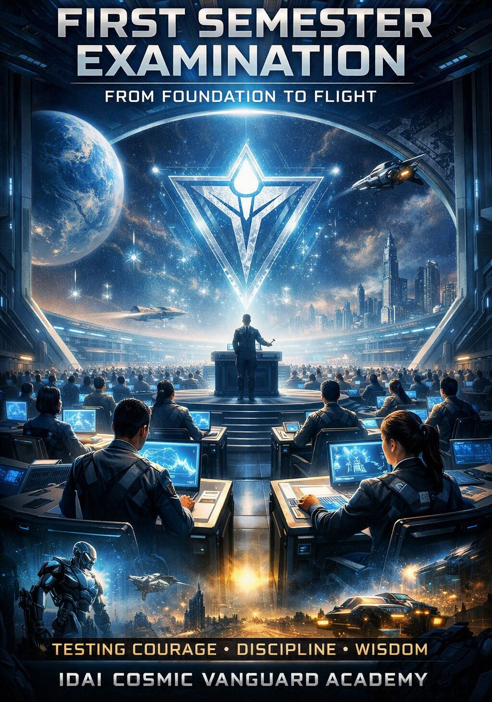
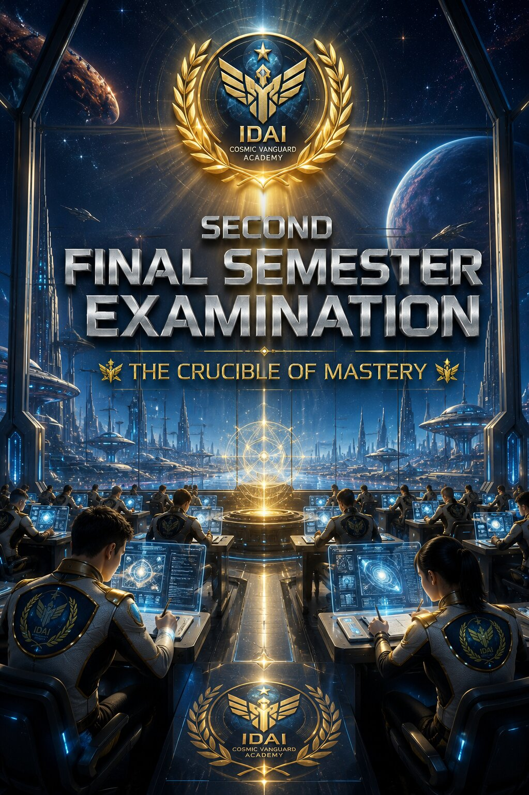
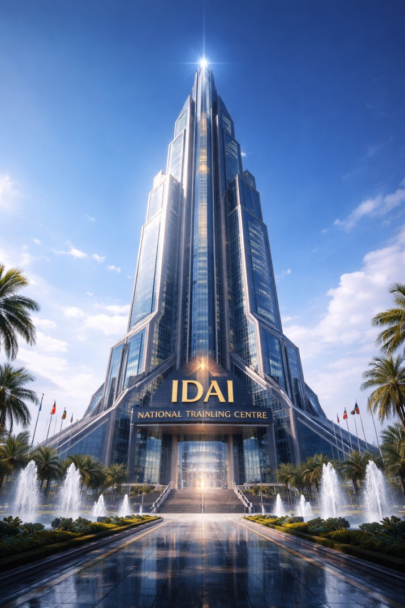
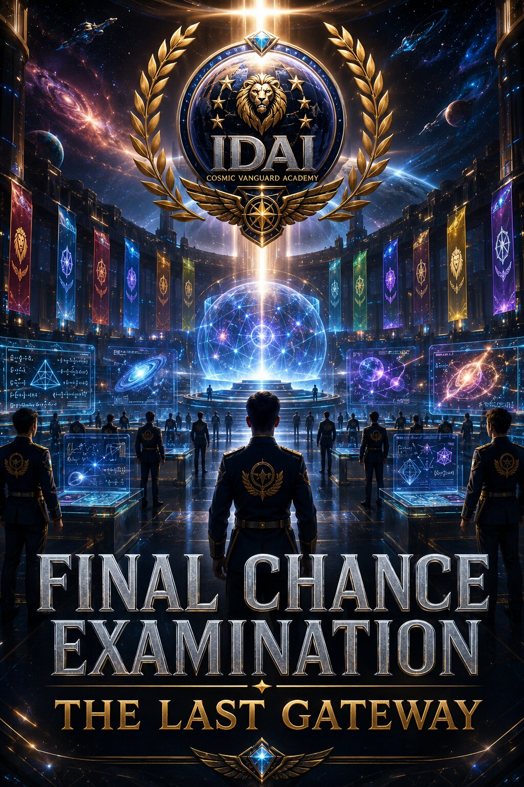

The First Semester Examination is the inaugural gateway of the IDAI Cosmic Vanguard Academy, where candidates are tested not only on knowledge but on discipline, adaptability, and vision. This exam represents the foundation of their journey, a crucible where raw potential is refined into resilience. With thousands of candidates entering the halls each year, the First Semester Exam ensures that only those who embody the Academy’s values of justice, perseverance, and responsibility progress forward. It is more than a test — it is a declaration of readiness, a moment where students prove that they can rise above challenges and embrace the Academy’s covenant of excellence.
Inside the futuristic exam halls, candidates face holographic simulations, AI-driven assessments, and real-time problem-solving challenges that mirror the complexities of interstellar life. They are taught that success is not measured by memorization alone but by the ability to apply wisdom under pressure. The institution emphasizes that the First Semester Exam is not simply an academic hurdle — it is the ignition of destiny, the spark that propels candidates into the higher realms of learning. Every graduate of this stage carries the pride of having conquered the first great trial, proving that they are ready to soar beyond foundations and into the limitless skies of the IDAI Universe.

The Second Final Semester Examination stands as the defining trial of the IDAI Cosmic Vanguard Academy — the moment where intellect, discipline, and leadership converge. It is the crucible through which candidates prove their mastery, demonstrating not only technical excellence but also the moral strength to wield knowledge responsibly. This exam represents the summit of the academic journey, where every challenge faced before culminates into one decisive test of character and capability. With thousands of candidates entering the grand halls of evaluation, the Academy ensures that only those who embody wisdom, precision, and courage ascend to the ranks of the Vanguard. It is not merely an exam — it is the transformation of scholars into leaders, of learners into legends.
Those who achieve between 625 and 659 marks in the final test secure their place as internal job holders within the IDAI Universe, stationed across the vast Antarctica continent. Their success grants them lifetime privileges — government-provided cars, guaranteed employment, and premium facilities that ensure a life of stability and prestige. This segment of graduates embodies resilience and determination, rewarded with a secure destiny where intellect is matched with opportunity. Their journey proves that even without the highest distinction, excellence is recognized, and their careers are safeguarded by the Academy’s eternal covenant of trust and progress.
Those who surpass 660 marks in the Second Semester earn the prestigious “Eternal Guardianship” card, a symbol of honor that accelerates their career path. This distinction grants them faster opportunities for promotions, ensuring their rise within the IDAI Universe is swift and celebrated. Beyond privileges, the Eternal Guardianship represents destiny fulfilled — proof that perseverance and brilliance lead to leadership. These graduates are not only guardians of humanity but also torchbearers of innovation, carrying the Academy’s covenant into every sector. Their legacy shines brighter, marked by trust, recognition, and the promise of eternal impact across galaxies.
Inside the examination chambers, candidates face holographic simulations of interstellar crises, ethical dilemmas, and real-time strategic operations. They are tested not only on what they know but on how they act when the universe demands judgment. The institution emphasizes that the Second Final Semester Exam is the ultimate measure of mastery — a covenant between knowledge and responsibility. Every graduate who passes this stage earns the right to carry the emblem of the IDAI Universe, symbolizing their readiness to lead humanity into the next frontier. In this crucible of mastery, the Academy teaches that true success is not perfection, but purpose — the unwavering resolve to serve, protect, and inspire across galaxies.

The Second Opportunity Examination is the Academy’s covenant of redemption — a chance for those who faltered to rise again. Candidates who fail the initial final test are not cast aside; instead, they are sent to the Nova National Training Center for one more year of rigorous preparation. This exam is designed to measure perseverance, determination, and the ability to transform failure into strength. With seven trials spread across seven days, each worth 100 points, candidates face a total of 700 marks, requiring 625 to pass. Those who achieve over 660 are awarded the Extraordinary Certificate, a distinction that accelerates their path to leadership and promotion within the IDAI Universe.
Inside the examination halls, candidates confront holographic simulations, ethical dilemmas, and strategic challenges that push them beyond their limits. They are taught that resilience is not about avoiding failure but about rising stronger after defeat. The institution emphasizes that the Second Opportunity Exam is more than a retest — it is a crucible of destiny, a proving ground where legends are reforged. Every graduate who conquers this stage embodies the Academy’s belief that greatness is not defined by perfection but by persistence. In Nova, the Academy teaches that failure is not the end, but the beginning of resilience — the spark that transforms ordinary candidates into extraordinary guardians of humanity.

The Final Chance Examination is the Academy’s most rigorous and unforgiving trial — the last gateway for those who have stumbled twice before. It is not simply a test of knowledge, but a crucible of spirit, designed to measure whether a candidate possesses the resilience, discipline, and moral strength to stand among the Vanguard. With only one opportunity granted, this exam is the embodiment of destiny: pass, and the gates of the IDAI Universe open; fail, and the journey ends forever. Candidates are reminded that this is not punishment, but purification — a chance to prove that true greatness is forged in adversity.
Inside the towering exam halls, candidates face multidimensional simulations, ethical paradoxes, and cosmic-scale challenges that demand wisdom beyond textbooks. They are tested on their ability to lead under pressure, to uphold justice when compromise tempts, and to carry the Academy’s covenant into the darkest corners of existence. The institution emphasizes that the Final Chance Exam is more than evaluation — it is the ultimate covenant of trust, where humanity’s guardians are chosen. Every graduate who conquers this stage emerges not only as a scholar but as a symbol of resilience, proving that destiny favors those who refuse to surrender. In this last gateway, the Academy teaches that failure is not defeat, but surrender — and that victory belongs to those who rise, even when the universe itself seems against them.